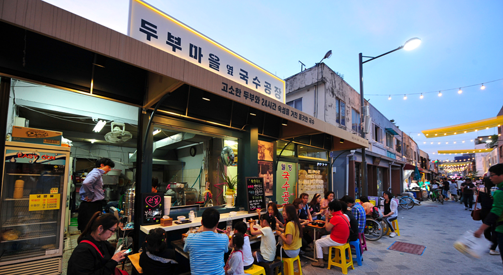
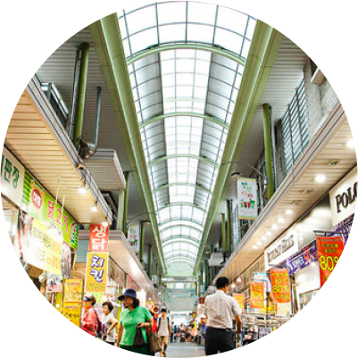

'낯선 곳으로 가면
그 동네 시장을 둘러보아라'
외국인 관광객이 즐겨 찾는 관광 명소 육성 대상으로 전통시장 20곳이 선정됐을 만큼 전통시장은 이제 더 이상 할머니, 할아버지들만의 장소가 아닙니다. 전 세대가 전통시장을 이용하기를 바라는 마음으로 현대화를 입혀 전통시장 사이트를 리뉴얼 하였습니다.

외국인 관광객이 즐겨 찾는 관광 명소 육성 대상으로 전통시장 20곳이 선정됐을 만큼 전통시장은 이제 더 이상 할머니, 할아버지들만의 장소가 아닙니다. 전 세대가 전통시장을 이용하기를 바라는 마음으로 현대화를 입혀 전통시장 사이트를 리뉴얼 하였습니다.
언제 어디서나 편하게 접근할 수 있도록 PC, Tab, Mobile 등 다양한 디바이스 비율에 모두 수용 가능한 반응형 페이지로 제작했습니다.

같은 포맷으로 반복되는 뉴스 이벤트 콘텐츠들은 데이터 JSON을 이용했습니다. JSON을 이용함으로써 뉴스가 새로 추가되더라도 내용 입력만 해주면 형식에 맞게 자동 등록될 수 있도록 제작했습니다. 디바이스 타입별로 다르게 3,2,1 행 콘텐츠를 나열해 적절한 크기로 이용할 수 있도록 하였고, 가독성 없이 정보만 나열되어 있던 온누리상품권 콘텐츠를 이미지와 함께 쉽게 정리했습니다.
언택트 시대에 맞춰 기존 사이트에 없던 ‘온라인 장보기’를 추가했습니다. 배달 서비스가 가능한 시장을 선택하면 그 시장의 품목들이 뜨는 콘셉트로 잡아 구성했습니다. 각 품목 군은 탭 형식으로 볼 수 있고, 평소 구매하던 가게의 이름만 보고는 낯선 느낌을 받을 수 있기 때문에 상품 이미지에 마우스를 올리면 해당 가게의 간판 사진으로 바뀌도록 설정하였습니다.
모바일, 탭 버전의 뉴스는 Swiper Plugin을 이용해 손가락으로 뉴스를 넘겨볼 수 있게 하였습니다. 뉴스 하단에 swiper bar를 추가해 현재 보고 있는 뉴스의 위치도 함께 표시해 주었습니다.
기존 지역/군/시장명 으로 파고 들어가 하나하나 찾아야 했던 방식에서 내 주변 시장 찾기 서비스를 도입해 손쉽게 시장을 찾을 수 있는 페이지를 제작했습니다. 지도 API를 활용하여 현재 위치를 중심으로 가장 가까운 시장과 그 정보를 보여주는 방식을 도입하였습니다.
